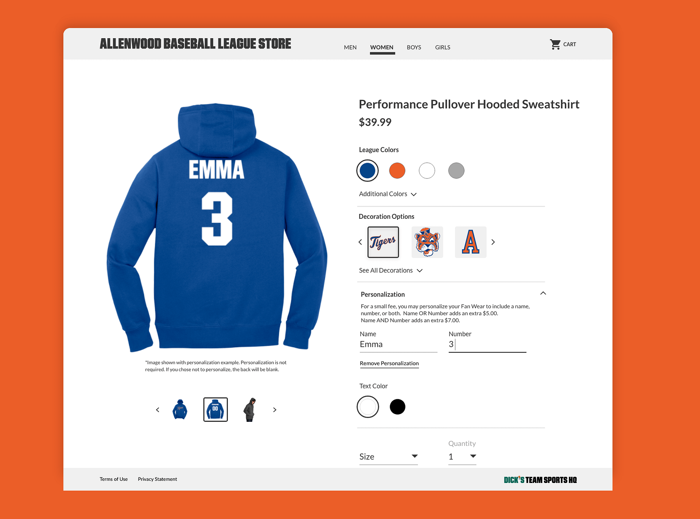
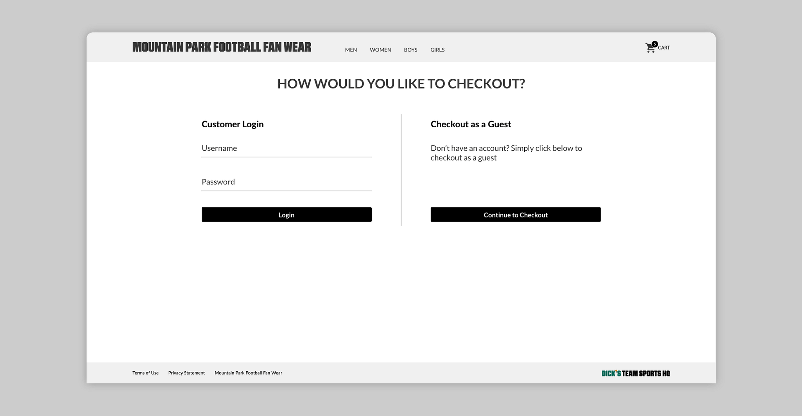
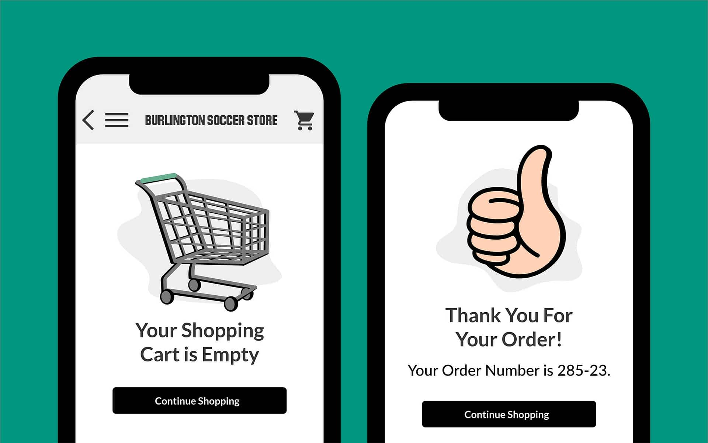
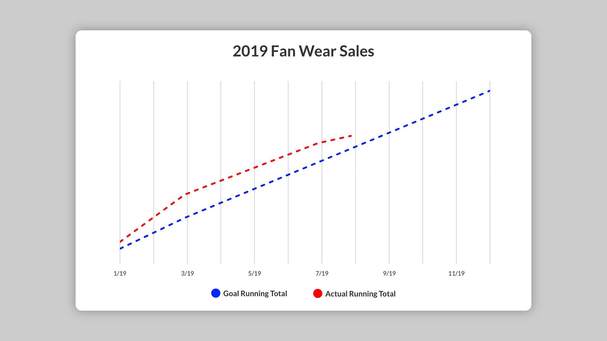

DICK'S TSHQ Fan Wear Redesign
In early 2018 DICK'S TSHQ launched a standalone fan wear store that was an expanded version of the store featured in registration. It allowed users to purchase made to order clothing—like hoodies, and t-shirts—with their team logos and colors. We offered this store as a free service with a portion of sales returning to the club. This allowed smaller organizations to offer a fan wear component without committing to printing everything up front and losing money on the backend if items did not sell.
For this project, I worked as the lead designer alongside the ecommerce dev team and product manager.
The Challenge
The concept of the fan wear store was great, but the problem was that it was built on a tight deadline, by a small team. There were quality control issues with the overall experience, and it wasn't marketed at all. Many customers were unaware that the store existed. Overall, the store was bare bones, and just did not look or perform the way one would expect an ecommerce experience to behave in the present day. I was tasked with giving the fan wear store an update, to make it easier to use, and to bring the overall experience up to current ecommerce expectations. With the ultimate goal of selling more fan wear.
Legacy fan wear UI.
Research
The pm and myself identified current issues with the product, user needs and our own business goals and requirements. A customer journey map was created to help understand how customers were using the site. Since TSHQ already launched a fan wear store, we had some initial research as to who our customer target base was, and what type of clothing items they were most interested in purchasing. I also worked with the support team to understand all of the current frustrations and pain points associated with customers of our current fan wear store.
I conducted external research to better understand the competitive field. I researched other sporting goods companies, and ecommerce leaders such as Nike, Adidas, and Amazon. I took trends and data from the research and distilled it down to create insights. I analyzed their approaches and solutions regarding similar problems we were solving, and highlighted their best practices.
Problem Areas and Assumptions
A big problem that was identified through user feedback was an overall confusion with our personalization flow. Customers could choose to personalize select garments with a name and number on the back. Due to the user flow, the process of selecting and applying the personalization to an item was confusing and hard to complete. As a result, customers were mistakenly buying items that did not reflect what they wanted, such as items without personalization when they actually did want to include it, and vice versa.
Our assumption was that redesigning the process for adding personalization to an item would lead to more personalized items added to the cart, which would lead to a higher revenue.
Looking at both analytical data and customer support staff feedback showed that our Shopping cart abandonment was high. Assumptions for this high rate were - users not noticing the increased cost of personalization items, and shipping costs being high.
We also identified an issue with who was able to purchase fan wear. Users had to be logged into their club's website to get into the fan wear site and to make a purchase. In order to increase our potential pool of customers, we needed an option to allow non users, such as relatives or friends to also make purchases.
Early sketches and wireframes.
I created wireframes, and worked on low fidelity designs, followed by new user flows based on the content. I created prototypes of low fidelity screens to test out the validity of our initial assumptions. Eventually, after some iterations and testing of ideas and concepts, new art direction was starting to define the details within the UI.
User flow.
Mobile prototype.
Design Solutions
Personalization
Looking at user testing data, it became evident that customers were filling out the fields for adding personalization information to their apparel. What they were failing to do was to click the checkmark to accept the info they submitted. Due to how the backend of our fan wear store was built, the system did not accept the added personalization without this confirmation by the customer. This was a big hint as to what was tripping up our users with this issue. Along the same lines, if a customer entered personalization and decided they no longer wanted to include it, they were forced to click an "X" icon with no clear indication of what the function of the button was.
When redesigning the personalization flow, I worked with the development team to come to a solution on having the system accept the field information in real time, as it was being typed rather than having the user accept the fields once complete. I also added a "Remove Personalization" button, to easily clear any fields that had previously been entered, and reduce any ambiguity derived from the previous method. Additionally, the price of an item would now update in real time when personalization was added in order to give real time feedback to the user.
Personalization.
Landing Pages
With the previous fan wear store, we were suffering from having a very small selection of items. The overall feeling was underwhelming. During the research phase, I noticed that many retailers usually sell relatively small categories of clothing, but they give their websites the appearance of grandeur by creating landing pages, marketing their shiniest, and newest items. This was a strategy that we adopted. Landing pages were created for categories such as personalization and seasonal items that we could rotate, like hoodies or tank tops.

Landing pages for personalization.
Including landing pages introduced a discoverability factor to grab the attention of more casual shoppers which may not be looking for a specific item, but are just browsing.

The landing pages also helped to drive the content for the redesigned home screen, where distinct content blocks could be used to funnel users into the different areas of the storefront. We have been exploring variations for the content blocks through A/B testing to test different images, apparel items, and seasons to have quantitative data to back up design decisions. One of our first tests revealed that hoodies continued to be one of our best sellers, even reaching into the middle of summer!

Home screen.
Visual Feedback
Once a user has added an item to the cart, they receive direct visual feedback to their decision in an overlay showing the item and details of the item selected, with two options "View Cart" or "Checkout". This overlay was meant to act as a clear CTA in order to funnel customers into the checkout process. If the customer was not finished shopping, they can click off the overlay, or it disappears after 2 seconds on screen.
Shopping Cart and Checkout Abandonment
Sites like Amazon have conditioned users to expect shipping to be free, and fast. In reality this is not the case, but users nevertheless still expect it. Our initial assumption of a cause of this was that users were not seeing their shipping rates until after they entered their shipping address. Our system needed this information in order to calculate what the rate would be. The solution was to provide an "estimated shipping cost" in the shopping cart to allow users to see beforehand that there are shipping costs associated with the store.
In order to help drive sales and combat constant user feedback that our shipping rates are too high, we introduced a series of promotions including free shipping. We have tested some variations on these promotions from a catch all "FREE SHIPPING" until a specific day when the promotion ends, to a more conditional buy X amount of fan wear and receive free shipping.
Guest Checkout.
We included a guest checkout option to increase our customer pool and to remove any purchase blockers. This also served a secondary benefit of automatically applying certain purchase information that was in our system such as name, address, email, and phone number, to streamline the process further for existing customers.
Photography
Another instance where the store was underperforming; the photography. Originally, the only images we had access to were individual images of products that we received from the clothing manufacturers. These images worked great for the product details screen where you needed to see a large, detailed image of the item you were looking to purchase, but we had no images of models wearing our clothing. This made our storefront absent of a human element.
We were able to work directly with DICK'S Sporting Goods corporate partners that they use for photoshoots and were able to piggyback off of some of the shoots that they conduct. This allowed us to diversify our image asset library and include some models of various ages wearing our apparel, and some laydown images of products.
We were able to leverage some of the illustrations I created for registration to keep consistent with our newly established look.
Illustrations found throughout TSHQ products.
Results
This project launched in early 2019. Usability and analytical research done on the store through user testing and surveys we've conducted have shown positive correlations in problem areas we were addressing. Our initial testing has been promising, and most of our assumptions are proving to be correct so far. For example, the number of items sold with fanwear have increased by 10%, and our shopping cart and checkout abandonment rates have dropped by close to 20% since implementing the redesign!
As of mid August, with 4.5 months left in the calendar year, we are already at 32% YoY (vs 2018) growth in sales!
Further improvements and enhancements are currently in the works. We are constantly running A/B tests and further usability tests so we can implement new features and functionality. We are also exploring new items in the store like embroidered goods, and sport specific coach recommended gear like gloves, and footwear.